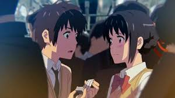
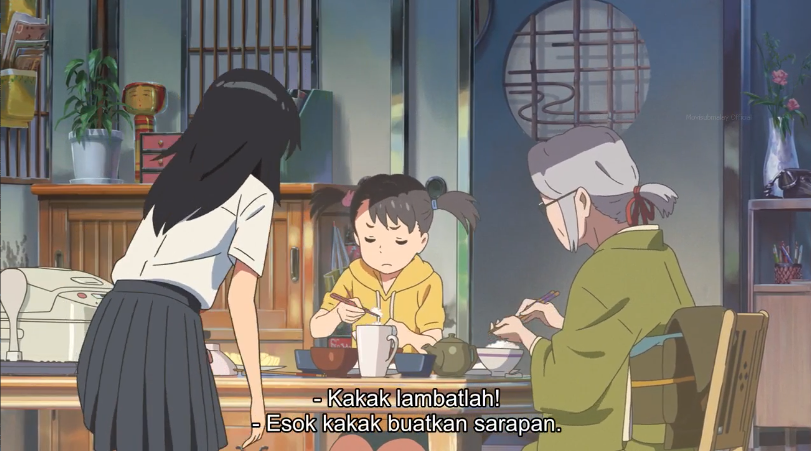
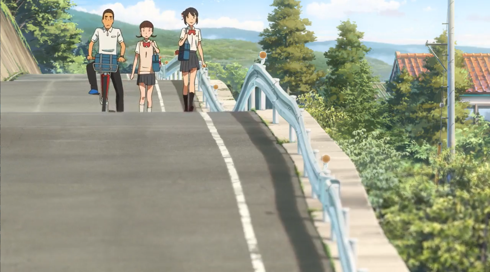
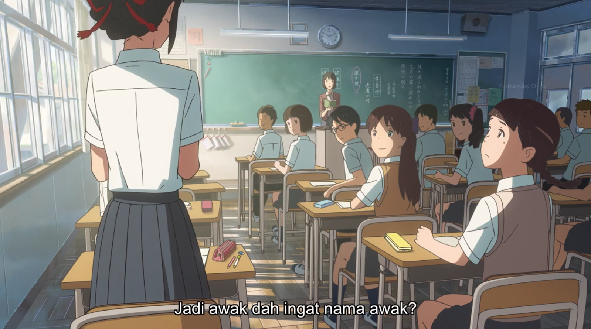

A nostalgic voice and smell. A lovely light and warmth. I am pressed right up against a very precious someone, with almost no gap between us. Inseparably connected. Not a single fragment of anxiety or loneliness lingers in me, as if I were a young infant again, simply drinking milk in the comfort of my mother’s breasts. A very sweet feeling, the feeling of not yet knowing loss, fills my body. Suddenly, my eyes open.
Ceiling.
Bedroom.
Morning.
Alone.
Tokyo.
-- I see.
It was a dream. I get up out of bed, and, in those mere two seconds, the warm feeling that had enveloped my body already disappears. It leaves no trace, no lingering comfort. At the suddenness of it all, leaving no time to think, tears begin to flow. I wake up in the morning, and for some reason I am crying. This kind of thing sometimes happens to me.
And I can never remember what I had been dreaming about. I stare at my right hand, the hand which had just wiped my tears away. Only a small droplet still sits on my index finger. The tears that dampened my eyes just moments ago have already dried up, along with my dream. Once, in this hand…
Something very important…
-- I can’t remember.
Giving up, I get out of bed and head for the sink. As I wash my face, I feel like I had once been surprised at the warmth and flavor of this water. I look into the mirror. An unsatisfied face stares back at me.
I do my hair as I gaze into the mirror, then pass my arms through the sleeves of a spring suit.
I fasten my tie, which I have finally gotten used to knotting, then put on my suit. I open the door of my apartment
I close the door of my apartment. In front of my eyes… The cityscape of Tokyo, which I have finally gotten used to seeing, spreads out in front of me. Just like I used to naturally memorize the peaks of mountains in the distance, I can now name a few of the skyscrapers before me.
I pass through the crowded ticket gates of the station and go down the escalator. I get on a commuter train. Leaning against the door, I watch the scenery as it flows by. In every building, in every window, in every car, and on every pedestrian bridge, the city is overflowing with people.
A faint, hazy white sky looms above. On a car carrying a hundred people, in a train carrying a thousand people, in a city carrying a thousand trains, I gaze.
And while gazing out at the city, like always,
I realize.
I am searching for someone, a single, specific person.
I realize
Chapter 2: Beginning
An unfamiliar ringing.
That thought drifted through my still fast asleep head. An alarm clock? But I’m still sleepy. Last night, I had become so absorbed in my drawing that I didn’t end up going to bed until dawn.
“... kun… Taki-kun.”
Now someone was calling my name. A girl’s voice… a girl?
“Taki-kun. Taki-kun.”
The voice was filled with a sharp sense of urgency, as if its owner were on the verge of crying. The voice quivered, like the lonely twinkling of a faraway star.
“You don’t… remember me?” the voice asked uncertainly.
I don’t know you. Suddenly, the train stopped and the doors opened. Oh, that’s right, I’m riding a train. The moment I remembered that, I realized I was standing in a train car packed full of people. In front of my eyes were another pair, a girl’s, open wide, staring straight back at me. As passengers exited the train, her school uniform figure started to get pushed farther and farther away from me.
“My name… is Mitsuha!” screamed the girl, then she undid the string tying up her hair and held it out to me.
Instinctively, I stretched out my hand. The band was a vivid orange, like the slender rays of the evening sun shining into the dim train car. I thrust my body into the crowd and firmly grasped it.
And then, I woke up. The echoes of the girl’s voice still faintly lingered in my eardrum. … name… Mitsuha?
An unfamiliar name, and an unfamiliar girl wearing an unfamiliar school uniform. She seemed so desperate. I remember the look in her eyes right before the tears started to fall from them. It was a serious, solemn expression, as if she gripped the very fate of the universe in her delicate hands.
But, well, it was just a dream. A meaningless dream. I already can’t even remember clearly what her face looked like. The echoes in my ears have disappeared too. But still.
Still, my heart is beating unnaturally fast. My chest feels strangely heavy. My body is covered in sweat. To start off, I took a deep breath.
“...?”
Did I catch a cold? Something feels wrong with my nose and throat. My windpipe is a little narrower than usual. My chest feels strangely heavy. Like, physically heavy. I glanced down at my body and saw my cleavage. My cleavage.
“...?”
The morning sun reflected off those bulges, causing the smooth white skin to shine. In between the two breasts, a deep shadow had gathered, like a blue lake in the valley between two mountains
Well, I guess I’ll give them a feel, I thought suddenly. The idea sprung up so naturally and automatically, like how an apple falls to the ground under the force of gravity.
……
…
…?
…!
I was impressed. Oooh, I thought. What is this? Taking it very seriously, I continued to fondle them. It was… how to put it… girls’ bodies are amazing…
“... onee-chan? What are you doing?”
Quickly turning towards the direction of the voice, I saw a small girl standing next to the opened sliding door. While still moving my hands about, I offered my honest thoughts. “Oh, you know, I was just thinking how real this feels… eh?”
I looked at the girl again: a cheeky looking kid of about ten years old with twintails and slanted eyes.
“... onee-chan?” I asked the child, pointing to myself. That means… this girl is my little sister?
“What are you doing? Get up! Hurry, it’s time to eat!” the girl said with a thoroughly disgusted expression, then slammed the door shut.
While thinking she seemed like quite a violent child, I got up out of the futon. Now that the girl mentions breakfast, I realize I’m hungry. Suddenly, I spotted a dresser in the corner of my eye. After walking a few steps on the tatami, I stood in front of the mirror. I slipped the loose pajamas off my shoulders, leaving me naked, and began to stare intently at the body reflected in the mirror.
Long black hair like a current of water, with strands sticking up in various places from the previous night’s sleep. On a small round face, large curious eyes and lips that looked somewhat cheerful. A thin neck and deep gaps above the collarbones. A healthy bulge at the chest. The gentle curves of the stomach and hips, stretching down from below the shadow of the faintly protruding ribcage.
I had never seen it in person before, but it was unmistakably a woman’s body.
A woman’s?
I am… a woman?
All of a sudden, the hazy drowsiness that had enveloped my body since waking up lifted completely. In an instant, my head became clear, and, in the next, fell into confusion. And then, not able to bear it any longer, I screamed.
“Onee-chan, you’re late!”
As I slid open the door and entered the living room, Yotsuha confronted me with that aggressive tone of hers.
“I’ll make breakfast tomorrow!” I said in place of an apology.
This child has a bad habit of thinking she’s more reliable and grown up than her big sister, despite the fact that not even all of her baby teeth have fallen out yet. Must not show any weakness by apologizing! I thought as I opened the rice cooker and piled the sparkly fresh grains into my bowl. Ah, did I get too much? Meh, whatever
“Itadakimaasu.”
After pouring plenty of sauce on my fried egg, I stuffed a bite of it into my mouth along with some rice. Aaah, delicious. Perhaps this is true happiness… hm? I feel a pair of eyes watching me.
“You’re normal today, huh?”
“Eh?”
I looked over and noticed that Grandma was staring at me chewing my rice.
“Yesterday was really bad!” Yotsuha, also staring at me, said with a smile. “Suddenly screaming and stuff…”
Screaming? Grandma continued to stare as if she were carefully inspecting an unknown suspicious object, and Yotsuha continued to make fun of me with that grin.
“Huh? What, what? What is it!?”
What’s going on… both of them acting creepy and all--Ping pong pang pooong.
The speaker by the door rang with a sudden, almost violently loud burst of volume. "Good morning, everyone. "
The voice belonged to my best friend Saya-chin’s older sister, who works in the community life division at the town hall. Here in the sleepy little village of Itomori, population about 1500, most people are either acquaintances or at least acquaintances of acquaintances. "Here are the morning announcements"
Speakers like these are set up outside throughout the town as well, so the broadcast echoes off the nearby mountains, creating a sort of round as the sounds all pile on top of each other. Twice a day, once in the morning and once in the evening, without fail, this broadcast on the wireless disaster warning system can be heard in every home and every street of town, faithfully announcing things like the schedule for sports day, or who’s on snow shoveling duty, or who was born yesterday and whose funeral is today.
"First, an announcement from the Committee for Election Administration about Itomori’s mayoral election to be held on the 20th of next month"
The speaker by the door abruptly fell silent. Since she couldn’t reach the speaker itself, Grandma, over eighty years old and always wearing an old fashioned kimono, had simply unplugged it in a silent display of anger. Slightly impressed, I followed up by grabbing the remote and turning on the TV. A smiling NHK anchor started talking in place of Saya-chin’s sister.
“In just one month, a comet which only visits once every 1200 years will at long last draw close to Earth. It will be visible to the naked eye for a period of a few days. Research agencies around the world, including JAXA, are busy preparing to observe this celestial show of the century.”
Displayed on the screen were the words ‘Tiamat’s Comet: Observable with the Naked Eye in One Month’ and a blurry picture of a comet. Eventually our conversation stopped, leaving only the sound of us three eating, a quiet rustling like whispers sneakily being exchanged during class, mixed with the NHK broadcast.
“... get over it and make up already, okay?” Yotsuha ordered suddenly.
“This is a grown up problem!” I shot back sharply. That’s right, this is an adult problem. Mayoral election? Don’t give me that crap.
Pii-hyororo. Somewhere off in the distance, a black kite chirped lazily. Ittekimaasu. Yotsuha and I synchronized our voices, saying goodbye to Grandma before we stepped out of the foyer.
The calls of the summer mountain birds rang loudly throughout the air as we walked down the narrow asphalt path running along the slope. After descending a few flights of stone stairs, we lost the protection of the mountains’ shadows, and the sun’s rays began to bear down directly on us. Spreading out beneath my eyes was a round lake, Itomori Lake. The calm surface of the water, reflecting the morning sun’s light, sparkled relentlessly. Above the mountains, which rolled out in a jagged chain of dark green, the blue sky, spotted with white clouds, loomed. Next to me, a young girl sporting twintails and a red backpack was skipping along for no particular reason. And then there was me, the high school girl with dazzling bare legs. In my head, I tried putting on a grand strings track as BGM. Ooh, now it feels a little like the opening of a Japanese movie. In other words, we live in a very Japanese-like, old fashioned rural town in the middle of absolutely nowhere.
“Miitsuhaaa!”
Some time after I had parted with Yotsuha in front of the elementary school, a voice called out to me behind my back. Turning around, I saw Tesshi peddling his bike with an unpleasant face along with a smiling Saya-chin casually sitting in the luggage basket.
“Hurry up and get off,” Tesshi complained.
“It’s fine, party pooper.”
“You’re heavy.”
“Hey, rude!”
The two seemed to be starting out the morning with a comedy act, like an arguing couple on a TV show.
“You two sure are close.”
“No!” the two screamed back in harmony.
I burst out laughing at their synchronized denial, my internal BGM changing into a melodic guitar solo. The three of us have already been best friends for ten years now: me, petite Saya-chin with her straight bangs in front and twin braids hanging down in the back, and lanky Tesshi with his out of fashion buzzcut. Saya-chin and Tesshi always appear to be arguing, but their conversations flow perfectly, and, secretly, I’m convinced that they would make a good couple.
“Hey Mitsuha, your hair’s normal today,” Saya-chin said with a smile while touching the area around my hair string.
I always have the same hairstyle, which I learned a long time ago from Grandma: a triple french braid with my hair string wrapped around it and tied behind my head.
“My hair? What do you mean?”
I recalled the mysterious conversation from this morning. You’re normal today, huh? First Grandma and now Saya-chin… was I acting weird yesterday or something? As I tried to remember what happened yesterday…
“Yeah, did you get your Grandma to exorcise you?” Tesshi asked with a worried face.
“Exorcise?”
“You were definitely possessed by a fox spirit!”
“Whaa?”
As I struggled to keep up with Tesshi’s sudden accusations, Saya-chin covered for me with a disgusted face. “You always try to turn everything into some occult nonsense! Mitsuha’s probably just really stressed, right?”
Stress?
“Eh? W-Wait a second, what are you guys talking about?” Why is everyone so worried about me? Yesterday… I can’t really remember what happened, but it should have been just a normal, non eventful day.
-- Huh?
Am I sure about that? Yesterday, I…
“And more than anything!” A deep voice amplified by a megaphone interrupted my thoughts.
Across the street, next to a row of greenhouses, in the unnecessarily large town managed parking lot, a crowd of about a dozen people had gathered. And in the center of the crowd stood a conspicuously tall man confidently holding a megaphone: my father. Proudly displayed on the sash he wore above his suit were the words ‘Incumbent - Miyamizu Toshiki’. He appeared to be giving a speech for the mayoral election.
“More than anything, in order to continue building and improving our community, we must stabilize our financial affairs! Once we accomplish that, we will be able to fully focus on the safety and comfort of our town. During my years in office, I’ve been able to come this far, but I want to finish the job and bring even further polish to this town! I will lead this land with unprecedented passion and build a society in which everyone, from children to the elderly, can live a fulfilling, worry-free life! That is my mission…”
His speech, delivered so expertly it was almost overwhelming, reminded me of the politicians on TV and felt extremely out of place in that parking lot surrounded by vegetable fields. I started to feel uneasy. The whispers I heard among the audience made my mood even worse. It’s gonna be Miyamizu again this time anyways. Looks like word’s spread pretty fast.
“Hey, Miyamizu.”
“... good morning.”
This is the worst. A group of three classmates I don’t particularly like very much came up and started talking to me. These people, who belong to the cool and flashy class at the top of the hierarchy, bother us, who belong to the plain, normal category, every chance they get. “The mayor and his contractor,” one of them said, then turned to look at my father delivering his speech. Beside him on the platform, Tesshi’s father stood with a broad smile across his face. His jacket displayed the name of his own construction company, and around his arm was a band that read ‘Miyamizu Toshiki Support’. The kid then turned back around to look at me and Tesshi. “I see their kids are also always sticking together. Did your parents order you to?”
Stupid. Without bothering to respond, I started walking faster. Tesshi also managed to keep an expressionless face; Saya-chin alone seemed annoyed.
“Mitsuha!"
Suddenly, a loud voice cried my name. I almost stopped breathing. I can’t believe it. My father had put down his megaphone and was calling me. The audience listening to his interrupted speech all at once turned to look at me.
“Mitsuha! Won’t you walk proudly!?”
My face turned bright red. At the absurdness of it all, I felt like I might cry. Desperately fighting the temptation to sprint away, I continued walking. Harsh even to family… that’s the mayor for ya. I can hear the hushed whispers of the audience.
Ouch! Kinda feel sorry for her. I can hear my laughing classmates’ remarks.
This is the worst.
The BGM playing in my head since I left home had stopped sometime amidst the commotion, and I am reminded that without any BGM, this town is no more than an oppressive,suffocating place.
Ka ka ka. The blackboard produced a scratching sound as the teacher wrote something that looked like a tanka. [a type of short classical Japanese poem]
Ta so kare to (Who is he?)
Ware wo na tohi so (Do not ask me that question)
Nagatsuki no (September’s)
Tsuyu ni nuretsutsu (Dew dampens me)
Kimi matsu ware so (As I wait for my beloved)
“Tasokare. This is where the word tasogaredoki comes from. You know what that means, right?” Yuki-chan-sensei asked in her clear voice, then wrote ‘tasokare’ in big letters on the blackboard. “Dusk. A time which is neither day nor night. A time when silhouettes begin to blur, and you can’t tell who’s who anymore. A time when you may meet things which are not of this world, such as demons or the dead. That’s where the word ‘oumagatoki’ comes from. Even further back, they also used the words ‘karetasodoki’ and ‘kawataredoki’.” [All of these words are either current or archaic ways to refer to dusk. ‘Oumagatoki’ means a time when you meet demons. ‘Kawataredoki’ and all the ones that sound similar to it mean a time when you ask ‘who is he?’. ‘Toki’ or ‘doki’ means time, ‘tare’ means who, and ‘kare’ or ‘ka’ means he.]
Yuki-chan-sensei now scribbled ‘karetaso’ and ‘kawatare’ on the board. What is that, some kind of pun?
“Sensei, question. Isn’t it supposed to be ‘katawaredoki’?” someone asked, and I agreed silently in my head.
Of course I knew ‘tasogaredoki’, but the other word for dusk that we learned as kids was ‘katawaredoki’. Hearing the question, Yuki-chan-sensei laughed softly. This classics teacher seemed too pretty to be working at this high school in the middle of nowhere.
“That’s just the dialect around here. You know, sometimes the elderly of Itomori still talk like the guys that wrote these poems.”
Someone followed the teacher’s answer with a joke about how we’re in the middle of nowhere, and the class started laughing. It’s true that sometimes when I listen to Grandma talk, it’s like ‘is that even Japanese?’. Like, she uses ‘washi’ [pronoun for ‘I’ typically used by elderly males] to refer to herself. I flipped through the pages of my notebook as I pondered this point and discovered a message written in big letters on a page that should have still been blank.
Who are you?
…. Huh? What is this? The sounds around me suddenly grew quiet, as if they had been sucked up by the unfamiliar handwriting in front of my eyes. This was not my handwriting. I haven’t lent my notebook to anyone. What does this mean?
“... san. Miyamizu-san!”
“Ah, yes?” I panicked and stood up.
“Please read from page 98,” Yuki-chan-sensei said, then, looking at my face, she added, “Miyamizu-san. Glad to see you remember your own name today.”
The class burst into laughter. Huuuh? What? What is she talking about?
“... you don’t remember?”
“... no.”
“Really?”
“I’m telling you, no,” I answered, then took a big sip of banana juice. Yum. Saya-chin is eyeing me like I’m some strange object.
“I mean… yesterday you forgot where you sit and which locker is yours. Your hair was still messy from sleep and wasn’t tied how you normally do it, your uniform didn’t have the ribbon on it, and you were in a bad mood the whole time.”
I tried picturing all that in my mind. …. Eh?
“Ehhhhh? No way! Really!?”
“It’s like you had amnesia.”
Thoroughly confused at this point, I once again tried to think back to yesterday… something’s definitely off. I can’t remember anything about yesterday. Wait, no. I can faintly recall a few things.
I was… in an unknown city somewhere?
In the mirror was… a boy?I tried to make sense of the fragments. A black kite somewhere nearby chirped as if mocking me. Pii-hyororo. It’s currently lunch time, and the three of us are sitting in the corner of the school garden, chatting with juice boxes in hand.
“Hmm… I feel like I had a really long, weird dream. It was like… another person’s life? Ugh, I don’t really remember.” “I get it!” Tesshi exclaimed suddenly, causing me to flinch. He stuck an occult magazine ‘Mu’ into our faces and started explaining a bit too excitedly. “It must be memories from your previous life! Well, you guys are probably going to say that’s unscientific and all, so let me phrase it differently. What probably happened is that your subconscious connected to the multiverse, as described in Everett’s many-worlds interpretation--”
“You just keep quiet,” scolded Saya-chin. “Ah! Were you the one who wrote in my notebook?” I screamed accusingly at Tesshi. “Huh? What are you talking about?” I guess not. Well, Tesshi isn’t really the type to pull that kind of stupid prank, and he didn’t have any motive to. “Ah. Nothing. Never mind.” I tried to take back my question. “Come on, what is it? You think I did something?” “I said, never mind.” “Wow, Mitsuha, so mean. You hear this Saya-chin? False accusations! Call a prosecutor… or is it a lawyer? Which one is it in this type of situation?” “But Mitsuha, you really were kinda strange yesterday,” Saya-chin said, completely ignoring Tesshi’s complaints. “Are you not feeling well or something?” “Hmm… that’s weird… maybe it really is stress…”
I thought about all the evidence I’ve heard today. Tesshi was once again absorbed in his occult magazine, as if our whole conversation had never happened. That’s one of his good points: he doesn’t drag things out. “Yeah, it’s definitely stress! You’ve got a lot going on recently, Mitsuha.” Tell me about it. On top of the stupid mayor election, tonight is at long last that dreaded ceremony! In this tiny little town, how could it be possible that my dad is the mayor and my Grandma is a priestess at the shrine? I buried my head in my knees and groaned loudly.
“Ugh, I just want to hurry up and graduate and move to Tokyo. I’m tired of being stuck in this stupid place!” Understanding my struggles, Saya-chin nodded repeatedly in agreement.
“My family has had three generations of town emergency broadcasters. The old ladies next door have called me ‘broadcast girl’ since I was a little kid! And now for some reason I’m in the broadcast club! I don’t even know what I want to do anymore.” “Saya-chin, once we graduate let’s move to Tokyo together! In this town, even once we become adults the dumb high school hierarchy’s going to carry over! We must break free from this cycle! Tesshi, you’re coming too, right?” “Hmm?” Tesshi sluggishly lifted his head up from his occult magazine. “... were you even listening?” “Ah… I was just thinking of staying here and living a normal life.”
Saya-chin and I sighed deeply. This is why he can’t get any girls. Well, I’ve never had a boyfriend, but that’s beside the point. I followed the wind blowing past with my eyes, and it lead me to a view of Itomori Lake, sitting down there peacefully, indifferent to our troubles. This town has no book store, no dentist, there’s only one train every two hours and only two buses per day, there isn’t even a weather forecast for our area, and the pictures of this area on Google Maps are just a blur of pixels. The convenience store closes at nine and sells vegetable seeds and high grade farming equipment... On the way home from school, Saya-chin and I entered anti-Itomori complaining mode. We don’t have a McDonald’s or Mos Burger, only two snack bars. There are no jobs, the daylight hours are short… the list goes on and on. Usually, the town’s isolation is actually refreshing and I even feel proud to live here, but today we are filled with genuine despair.
“You guys!” Tesshi, who had been pushing his bicycle quietly behind us the whole time, suddenly raised his voice angrily.
“... what.”
Then, he looked at the pair of us with a creepy smile. “Anyways, want to stop by a cafe?”
“Eh…”
“Wha--”
“Cafe!?” we screamed in unison.
Gachan! A metallic clashing sound rang briefly before melting into the chorus of evening cicadas. Tesshi held out the juice can that he just pulled out of the vending machine. On the road, an electric scooter hummed as it passed by, carrying on it an old man returning home from the fields. Also passing by was a stray dog, who, apparently deciding to grace us with his presence, sat down nearby and yawned.
The ‘cafe’ was not really that kind of cafe. In other words, it was no Starbucks or Tully’s, or a pancake or bagel or gelato selling dreamland which surely exists somewhere in this world. Instead, it consisted of merely a bench with a thirty year old ice cream sign stuck to it and a vending machine. In other words, it was just a neighborhood bus stop. The three of us were sitting lined up on the bench, with the stray dog at our feet, gulping down our canned juices. Rather than getting mad at Tesshi for tricking us, I simply gave up, realizing how stupid I was to believe that there would actually be a proper cafe in this dump.
“It feels a degree cooler than yesterday.”
“No, to me it feels a degree hotter.”
“Alright, I’m going to head home,” I told the other two after I had my share of canned juice and meaningless conversations.
“Good luck tonight,” said Saya-chin.
“I’ll come by to watch you,” said Tesshi.
“You don’t have to come! Actually, definitely do NOT come!” As I shot Tesshi down, I internally said a little prayer for them. Good luck with your relationship! After climbing a few flights of stone stairs, I turned around to see the pair still sitting on the bench with the sunset colored lake in the background. I tried a little lyrical piano music to go with the scene. Saya-chin and Tesshi really are perfect for each other. I’m about to have a very unhappy night of work, but you two at least should enjoy your youth, okay?
“Aw, I want that one too,” muttered an unsatisfied Yotsuha.
“It’s still too early for you, Yotsuha,” Grandma replied. The sound of iron weights clashing together rang ceaselessly throughout the six tatami mat sized work room. “Try listening to the voice of the thread,” Grandma continued, never once resting her busy hands. “If you keep coiling threads forever and ever like that, you’ll start to get feelings for them.”
“Eh? Threads can’t talk.”
“In our kumihimo...” continued Grandma yet again, completely ignoring Yotsuha’s protests.
The three of us are all in our traditional clothing, finishing up the kumihimo to be used in tonight’s ceremony. The kumihimo, a traditional craft passed down from long ago, consists of many thin threads tied together to form one cord. A finished kumihimo can have various designs and patterns woven into it, making it colorful and cute, but to make one requires a fair amount of expertise. Accordingly, Grandma was in charge of making one for Yotsuha, who was forced into doing grunt work as her assistant, simply wrapping thread around weights. “In our kumihimo, a thousand years of Itomori history is carved. You kids’ schools were originally supposed to teach this kind of town history, but, anyway, listen up. Two hundred years ago…”
It’s starting again, I thought with a wry smile. Ever since I was little, I’ve had to listen to Grandma’s special little history lesson here in this workroom.
“A fire started in the bathroom of zouri [traditional Japanese sandal] maker Mayugorou Yamazaki, and this whole area burned to ashes. The shrine, the archives, everything. This event is known as--” Grandma looked over at me.
“The Fire of Mayugorou,” I answered, completing her sentence, and Grandma nodded contently.
“Eh? Fires have names!?” a surprised Yotsuha exclaimed. “I feel bad for Mayugorou-san, having his name live on for this.”
“The meaning behind the pattern on our kumihimo and in our dance was lost with the fire. What remained was merely the form. But, even though we no longer know the meaning, we must not get rid of the form. For the meaning carved into the form will one day rise again.”
The way Grandma talked had a sort of ballad-like rhythm to it, and I quietly repeated her words while braiding my kumihimo. The meaning carved into the form will one day rise again. That is the important duty that we--
“That is the important duty that we have at Miyamizu Shrine. But despite that….”
Grandma’s gentle eyes became instilled with sadness. “Despite that, that idiot son… not only abandoning his priesthood and leaving the house, but trying to be a politician…” Blending in with Grandma’s sigh, I also sighed lightly. Whether I like this town or hate it, whether I want to go off somewhere faraway or stay here forever with family and friends, I really don’t know myself. I took my finished kumihimo, woven beautifully with vivid colors, and removed it from its stand, making a lonely clattering sound. Hearing the sound of the yamatobue [type of traditional flute] flow out of the shrine at night, I imagined that if a city person were here, they might think it was something out of a horror movie. Like a brutal murder in some small village, or a mysterious family, or some other ominous happening. And then we have me, dancing my shrine maiden dance, wishing that Sukekiyo or Jason or someone would just come and free me from my misery.
The leading roles of this annual Miyamizu Shrine Harvest Festival are, unfortunately, given to us sisters. On this day, we get the privilege of putting on snazzy shrine maiden outfits, smearing on dark red lipstick, wearing head decorations with jingling bells on them, standing in front of an audience on the kagura [type of dance performed in shrines or courts] stage, and dancing the dance we learned from Grandma. A dance performed by a pair, whose meaning was apparently lost in that fire, it involves us holding bells with colorful cords hanging off of them, ringing said bells noisily, spinning around, and waving the cords around in the air. The last time I spun around, I spotted Saya-chin and Tesshi out of the corner of my eye, making me even more depressed. For coming anyway even when I specifically told them not to, I decided that I would curse them with my shrine maiden powers and spam them with curse stickers on LINE. This dance, though, is not even the bad part. I mean, it’s a little embarrassing, but I’ve been doing it since I was a kid so I’ve gotten used to it. The real trouble is the ceremony that comes after this, the one that only gets more embarrassing as I grow up. That cursed thing, that thing which is nothing but a disgrace to a girl.
Aggghhh!!
Dreadful thoughts passing through my mind, I continued doing my thing until, before I knew it, the dance was over. At long last, the time had come.
Om nom nom nom nom.
Nom.
Om nom nom nom.
I am simply chewing rice. And chewing. And chewing. Trying my best not to think of anything, closing my eyes in an attempt to block out any sight, taste, sound, or color, I chewed. Yotsuha is beside me doing the same thing. We are kneeling on the floor side by side seiza [way of sitting] style, and in front of each of us is a small box placed on a table. And of course, beyond that is the audience, men and women, old and young, observing us.
Om nom nom nom.
Nom nom.
Ughh.
Om nom nom.
It needs to come out soon.
Nom nom.
Agh.
Nom.
I gave up and took the box sitting in front of me, brought it to my mouth, and at least tried to hide it with the sleeve of my chihaya [part of the shrine maiden uniform].
And then, ahh.
I opened my mouth and vomited all the rice I had been chewing out into the box, leaving a gooey, white liquid substance consisting of rice mush and saliva dangling from my lips. I hear whispers going around amongst the crowd. Ahhh. I cried on the inside. Please, I beg you, don’t look.
Kuchikamisake [literally mouth chew alcohol]. Japan’s oldest kind of sake, made by chewing rice, spitting it out, and leaving the saliva infused mixture alone until it ferments, creating alcohol. And then we offer it to the gods. Long ago, it was apparently made in many different regions, but whether or not any other shrine still does this in the 21st century is questionable. I mean, come on. This is absolute madness, with the shrine maiden uniforms and all. Who exactly is benefitting from this!? Even while complaining internally, I valiantly grabbed another handful of rice and stuffed it in my mouth. And chewed. Yotsuha followed suit, looking entirely unconcerned. We must continue doing this until the little box is full. Blargh. I spat out another batch of saliva and mushy rice. I cried on the inside again.
Suddenly, a familiar voice drifted past my ears. Waves of uneasiness came over me, like ripples growing larger and larger. I raised my eyes just a bit. -- Ah.
What I saw made me want to blow up this whole shrine. Of course, there they were: the cool and flashy group of three classmates. They were looking at me with smirks on their stupid faces and talking about something that must have been very amusing. ‘Ick, I definitely couldn’t do that’ or ‘kinda obscene’ or ‘doing that in front of people… I guess she can’t become a wife anymore’ or something like that. I feel like I can hear exactly what they’re saying, despite it being physically impossible at this distance.
I strongly, strongly made up my mind.
When I graduate, I’ll leave this town and go far away.
“Onee-chan, cheer up! It’s not a big deal, being seen by some people from school. Besides, you had to expect it, right?”
“Being a prepubescent kid must be so nice…”
I glared at Yotsuha. We had changed into T-shirts and just stepped out of the shrine office. After the Harvest Festival, as the grand conclusion to the night, we had to attend a banquet for all the old men and women around the neighborhood that helped out with festival preparations. Grandma was the hostess, while Yotsuha and I got the job of pouring alcohol and holding conversations.
“How old are you now, Mitsuha-chan? Eh, seventeen! Having my alcohol poured by such a young and cute girl, I feel young again.”
“Please, go all out! Feel young again! Drink more, more!”
I had been desperately serving our guests and about ready to collapse, when Grandma and the adults finally decided it was about time for the kids to go home and released us. They were still in the office having a grand old time.
“Yotsuha, do you know what the average age in that office was?”
The lights along the main path leading up to the shrine had all already gone out, leaving only the moonlit darkness and the refreshing voices of the insects to fill the area.
“Don’t know. About sixty?”
“I calculated it in the kitchen. Seventy-eight years old. Seventy-eight!”
“Hmm.”
“And now that we’re gone, it’s ninety-one! They’re practically dead already! I wouldn’t be surprised if an escort from the underworld came up to the shrine to get them right now!
“Hmmm.”
I was trying to convince her that we needed to hurry up and get out of this town as fast as possible, but Yotsuha’s response to her big sister’s ranting was a bit lacking. She seemed to be thinking about something else, so I gave up. In the end, the child could not understand her big sister’s troubles. I gazed upwards. Stars filled the entire sky, shining transcendentally, free from earthly worries.
“... that’s it!” Yotsuha exclaimed suddenly as we walked down the long stone staircase out from the shrine. With a proud face, like she had just found a hidden cake or something, she explained, “Onee-chan, you should make a ton of kuchikamisake and sell it for money to go to Tokyo!”
For a moment, I was at a loss for words.
“That’s an… interesting idea.”
“You can even include a ‘making of’ section with pictures and videos of the process. Call it ‘A Shrine Maiden’s Kuchikamisake’ or something! It’ll definitely sell!”
While worrying about whether or not Yotsuha will be okay, having this kind of outlook on the world at nine years old, I realized that it was just her way of looking after me and was reminded once again how cute she is. Alright, maybe I will look into this thing, a kuchikamisake business… wait, is it okay to just sell alcohol like that?
“Hey, what do you think of my idea?”
“Ummmmm…”
Hmmm. After all…
“No good! Violation of the Liquor Tax Law!”
? Was that the problem with it? I thought to myself, and, next thing I knew, I was running at full speed. A myriad of memories and feelings and hopes and doubts mixed and jumbled together, making my heart feel like it was about to explode. I skipped every other step dashing down a flight of stairs and then applied the emergency brakes, coming to a stop underneath the torii [the gates seen at shrines] of the dance hall. I sent a throatful of the night’s cold air into my lungs, then exhaled with all my might, expelling the mess in my heart along with the air.
“I’m tired of this town already! I’m tired of this life! Please let me be reborn as a handsome boy in Tokyo!!”
Tokyo Tokyo Tokyo Tokyo.
My wish reverberated amongst the mountains a few times, then simply disappeared, as if sucked in by Itomori Lake below. At the stupidity of the words I had instinctively blurted out of my mouth, my head grew cold along with the sweat running down it.
Ah, but still.
God, if you really are there.
Please--
If the gods really did exist, I still don’t know what I would truly want to wish for